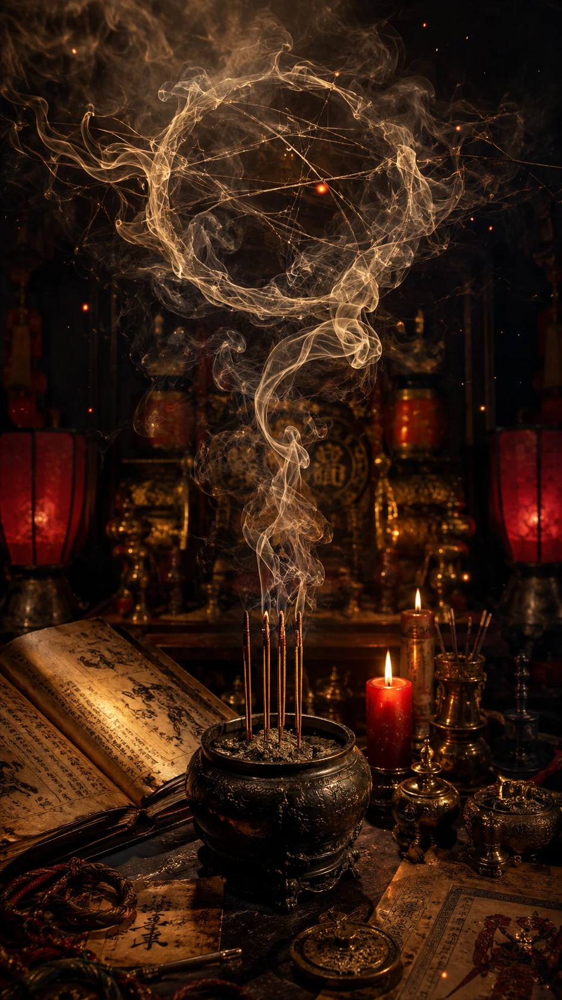

MAIN JUDGEMENT
나, 붙을 각이야?
지금은 막연한 불안보다 방향 조정이 먼저입니다. 단기 몰입과 회복 루틴을 같이 잡으면 합격각이 살아납니다.
전체 판정
GO 60 / HOLD 25 / 재정비 15
완전히 멈출 흐름은 아닙니다. 다만 지금 방식 그대로 밀면 집중 누수가 커질 수 있어, 공부법과 생활 리듬을 먼저 조정한 뒤 속도를 올리는 쪽이 좋습니다.
붙는 흐름목표 의식, 단기 집중력, 실전 감각
잡는 흐름비교 자극, 수면 흔들림, 계획 과다
시험 궁합객관식·어학·인증형은 유리, 장문 서술형은 루틴 보완 필요
핵심 문장불안을 줄이는 공부가 아니라, 점수를 올리는 공부만 남긴다.

STUDY STRATEGY
내 머리 쓰는 법
암기량을 늘리기 전에 이해 기준을 먼저 잡고, 마지막 30일에는 기출 반복과 오답 압축으로 전환하는 방식이 맞습니다.

TIMING
붙는 타이밍
접수 전에는 자료 정리, D-30부터는 실전 모드, D-7에는 새 범위 확장보다 컨디션 고정이 우선입니다.

MENTAL ROUTINE
버티는 몸과 멘탈
흔들릴 때는 계획을 더 키우지 말고, 수면 시간과 첫 40분 루틴을 고정하세요. 무너지는 지점은 의지가 아니라 회복 리듬입니다.
현실 액션 플랜
D-100시험 범위를 끝까지 훑고, 버릴 과목·버릴 단원을 먼저 정합니다.
D-30기출과 오답을 중심으로 점수 변동폭을 줄입니다. SNS와 비교 후기는 차단합니다.
D-7새 자료 금지, 수면 고정, 시험장 이동 동선과 준비물을 체크합니다.